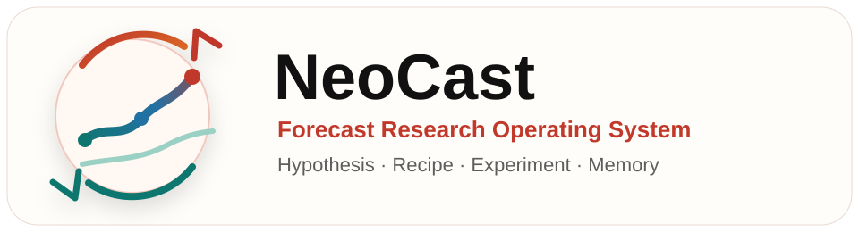
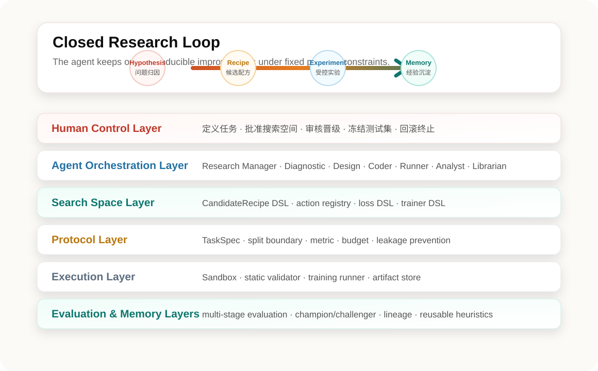

将“研究假设 → 模型配方 → 受控实验 → 结果归因 → 研究记忆”串成闭环， 面向时间序列预测构建可复现、可审计、可持续积累的 Forecast Research Operating System。
中国科学技术大学 · 认知智能全国重点实验室
时间序列预测领域已经形成高度碎片化的模型生态：Autoformer、PatchTST、iTransformer、DLinear、FITS、TimeMixer 等方法分别从分解、patching、变量 token、频域与 mixing 等角度切入。 但每一个“小模型”的诞生，仍然需要研究员反复设计结构、调 loss、跑 ablation、记录经验。
NeoCast 的目标是把这类重复而高频的研究动作系统化：人定义任务边界、预算和研究方向， Agent 在可审计的实验环境中完成候选生成、代码变更、训练评估、结果归因与记忆更新。 产物不是单次回答，而是可复现的模型、recipe、实验记录、报告和跨任务经验。
时间序列小模型研发不是简单的模型选择问题。真正困难的部分在于：模型结构、预处理、变量交互方式、预测头、训练目标和数据属性之间存在强耦合，而这些经验很难靠一次性搜索或自由代码生成稳定积累。
同一类改动会在不同数据集、horizon 和变量设置下反复试验，人工记录与复盘成本高。
不同论文模型往往绑定一整套设计，难以拆解成可组合、可审计的模块级 action。
如果 Agent 能频繁读取 test 或修改数据切分，就会把研究系统变成隐性调参器。
“强季节性适合什么结构”“变量相关高时如何融合”这类经验需要跨任务沉淀。
NeoCast 的完整形态由七层组成：人类控制层负责边界和审批，Agent 编排层负责研究任务分解， 搜索空间层提供 CandidateRecipe DSL 与 action registry，协议层固定数据与评估规则，执行层运行隔离实验，评估层判断晋级，记忆层沉淀经验。

创建 TaskSpec，绑定数据版本，抽取趋势、季节性、变量相关、缺失率等 TaskFingerprint。
基于任务指纹和记忆生成 CandidateRecipe，再转为配置或模板化 patch，并检查越权、预算和接口兼容性。
在隔离执行环境中运行训练、收集 artifact、计算指标，并用统一晋级规则比较 challenger 与 champion。
保存实验谱系、失败模式、相似任务经验，同时保护 reference test 和 blind test 的访问权限。
MVP 阶段采用 autoresearch 同构的最小文件结构：冻结的 prepare_tsf.py 负责数据加载与评估，
train.py 是 Agent 唯一可编辑实验层，program.md 则承载人类制定的研究策略与行为协议。
| autoresearch | NeoCast MVP | 角色 |
|---|---|---|
prepare.py |
prepare_tsf.py |
冻结数据加载、切分、标准化和评估协议 |
train.py |
train.py |
模型结构、loss、训练循环的受控实验层 |
program.md |
program.md |
人类定义研究策略、预算、keep / discard 规则 |
val_bpb |
val_avg_mse |
Agent 可见主指标，越低越好 |
NeoCast 的关键升级是从“选择完整模型族”转向 TimeRecipe 风格的模块级配方搜索。 Agent 不再直接问“用 PatchTST 还是 iTransformer”，而是在受限 registry 中选择 preprocessing、embedding、backbone、fusion、head 与 training strategy。
| 模块 | 候选 action | 研究偏置 |
|---|---|---|
| Preprocessing | none, instance_norm, series_decomposition, seasonal_differencing |
处理尺度漂移、趋势、季节性和缺失提示 |
| Embedding | none, token, patch, invert, frequency |
控制序列进入主干网络的表示粒度 |
| Backbone | linear, mlp, rnn, tcn, transformer, ssm, mixer |
探索轻量、低延迟与长依赖建模之间的权衡 |
| Fusion / Head | temporal, feature, gated_hybrid, linear, quantile |
决定优先建模时间依赖、变量依赖或不确定性输出 |
Dataset profiler 只在 train split 上计算任务指纹，再用 rule-based prior 或 rank predictor 给候选排序。
例如，长 horizon 且 trend 强时优先尝试 series_decomposition + patch + temporal fusion + linear/mlp；
变量相关性高时优先尝试 invert embedding + feature fusion。
NeoCast 的第一原则是“先协议，后智能”。所有归一化、缺失填补和统计特征拟合只允许在 train fold 上完成；
val_avg_mse 是 Agent 日常 keep / discard 的唯一决策信号，reference test 和 blind test 则由 Runner / Human Gate 保护。
统一声明 task_id、forecast mode、context length、prediction lengths、dataset loader、split、metric、seed 与预算。
禁止读取未来特征、修改 split、把 test 写入 Agent 可读日志，reference test 只在晋级节点查询。
| 层次 | 名称 | 用途 | 查询频率 |
|---|---|---|---|
| L1 | Dev Validation | 日常 keep / discard 决策 | 每次实验 |
| L2 | Reference Test / Shadow Holdout | 晋级筛选与对外参考对齐 | 每 N 次 keep 后由 Runner 查询 |
| L3 | Blind Test | 最终 champion 确认 | 仅晋级节点，后期独立服务暴露 |
人类负责定义任务、冻结协议、批准搜索空间扩展和审核最终 champion； Agent 负责高频试验、候选生成、受限 patch、结果归因和研究记忆更新。 这种分工让系统既能持续探索，又保留科研级审计、回滚与权限边界。
NeoCast 的实现路线从最小闭环开始，而不是一开始就构建全功能平台。 第一阶段先验证 Agent 能否在单任务、单文件、固定协议下形成有效 keep / discard 循环； 随后再逐步引入 DSL、registry、低保真筛选、多 seed、研究记忆与 blind test 治理。
prepare_tsf.py、NLinear CI baseline、program.md 与 Phase 0a 闭环。
相对 baseline 的 val_avg_mse 改进、Pareto 改进覆盖数据集数、top-k recipe 命中率。
每次有效改进所需实验轮数、GPU 小时、候选到晋级的转化率。
实验复现通过率、训练失败率、patch 回滚率、blind test 泄漏事件数。
可复用 heuristic 数量、相似任务迁移成功率、失败模式覆盖率。
本页面根据 NeoCast 规划文档整理而成，聚焦对外介绍系统定位、架构分层、研究闭环、CandidateRecipe 搜索空间与研发路线。 当前内容作为项目介绍页使用，后续可在代码仓库、论文、benchmark 结果明确后补充 GitHub、技术报告和 citation。